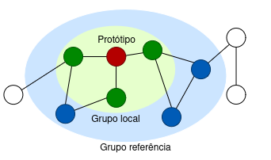
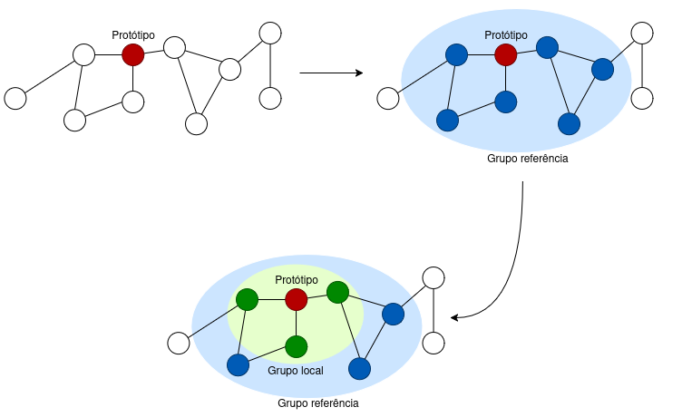
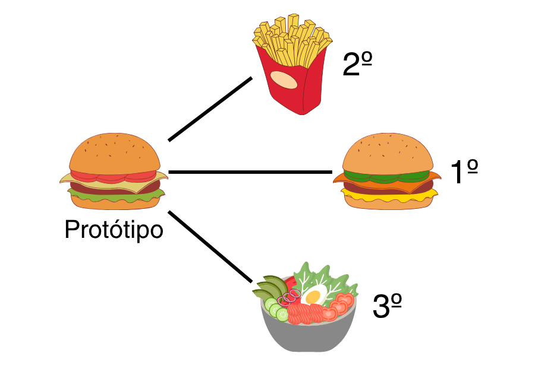
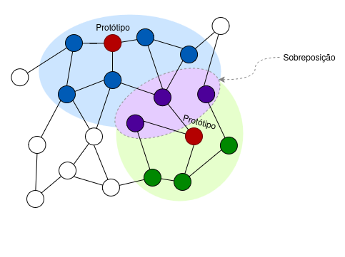
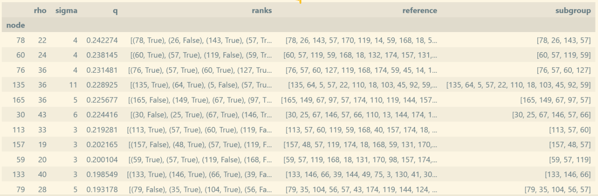

Artigo 4: Local Subgroup Discovery on Attributed Network Graphs
Introdução
Atualmente, vivemos cercados por uma quantidade muito grande de dados sendo gerada o tempo todo, especialmente em redes sociais, biológicas e de comunicação. Nesse cenário, tornou-se essencial usar algoritmos que consigam identificar, automaticamente, grupos que se comportam de maneira diferente do que é mais comum nessas redes. Essas redes (ou grafos) representam entidades (como pessoas, sites, itens) como nós e as conexões entre elas como arestas.
Uma das formas de explorar esses padrões especiais nessas redes é com a técnica do Subgroup Discovery (SD), ou descoberta de subgrupos. Imagine, por exemplo, que você queira encontrar uma turma de alunos particularmente altos em uma escola. O SD faria isso comparando a altura média dessa turma com a altura média de todos os alunos da escola.
O problema é que, em redes muito grandes e diversas, comparar um grupo com o todo pode acabar escondendo padrões importantes em um contexto local. Na analogia, um aluno do ensino fundamental pode ser muito alto para a idade dele, mas isso pode passar despercebido se a comparação for com alunos de toda escola, que inclui os alunos do ensino médio, que naturalmente são maiores. É justamente para lidar com isso que surge o Local Subgroup Discovery (LSD). Ao invés de comparar um grupo com toda a rede, ele o compara apenas com um grupo de referência local, ou seja, com outros nós parecidos naquele contexto local.
Este artigo inovou ao aplicar esse conceito em redes com atributos, onde cada nó possui características associadas (como uma pessoa, que possui nome, idade, altura, etc). A ideia aqui é usar essas características combinadas com a estrutura da rede para encontrar grupos que realmente se destacam, seja por comportamento, perfil ou outro critério interessante.
Funcionamento do método
Como mencionado anteriormente, o método proposto pelos autores combina a estrutura da rede com os atributos para encontrar um grupo de referência que se destaque da rede geral e, dentro dele, um grupo local que se destaque.

Vamos quebrar o processo em partes:
Escolhe-se um protótipo, que é um ponto de partida do método, podendo ser qualquer ponto da rede.
Utilizando procedimentos de caminho mínimo (como Dijkstra), calcula-se a distância entre esse protótipo e os demais pontos da rede, criando um ranking.
Cria-se o subgrupo de referência (os ρ pontos mais próximos do protótipo) e o subgrupo local (os σ pontos mais próximos do protótipo, dentro de ρ), de forma que a medida de qualidade seja maximizada.
Avalia-se o quão diferente o subgrupo local é do grupo de referência, com base na distribuição da variável-alvo. Para medir essa diferença, os autores utilizaram uma métrica da teoria da informação chamada Divergência Ponderada de Kullback-Leibler (WKL), que basicamente mede o quanto as distribuições se diferem.

Empate nas distâncias
Você pode ter muito bem observado que simplesmente usar o algoritmo de caminho mínimo pode gerar empates: muitos pontos podem estar a uma exata mesma distância, em nível de aresta, do protótipo. É aqui que entra a Distância de Gower, que considera os atributos dos nós para desempatar. Logo, nós que são mais parecidos com o protótipo são preferidos em relação aos outros, garantindo que o grupo formado tenha sentido tanto na estrutura quanto nas características. No exemplo abaixo, tínhamos um empate, a nível de aresta, entre o protótipo e os outros nós, mas as características dos mesmos foi usada para desempatar, produzindo este ranking.

Pós-processamento dos grupos
Ao selecionarmos vários protótipos, pode acontecer de alguns deles serem muito próximos na rede, o suficiente para gerar subgrupos muito parecidos. Pensando nisso, os autores fazem um pós-processamento dos grupos encontrados, utilizando o coeficiente de Dice-Sørensen, que basicamente diz o quanto dois grupos se sobrepõem.

Definimos um limiar de sobreposição. Ao encontrarmos um par de grupos que se sobrepõem demais, cortamos um deles, o que garante que, ao final, tenhamos subgrupos especiais suficientemente diferentes.
Bases de dados de teste
A proposta foi testada em três conjuntos de dados distintos:
OGBG-MolPCBA: conjunto com 41.127 grafos. Cada grafo é uma molécula, onde os nós são os átomos, com atributos como número atômico, hibridização, etc. A descoberta de subgrupos ajuda a identificar estruturas químicas com propriedades especiais.
Twitch PT: rede de streamers portugueses da plataforma Twitch. Trata-se de um conjunto de 1.912 nós, que representam streamers, e 64.510 arestas, que representam seguidores. A variável-alvo é o uso de linguagem explícita. O LSD encontrou subgrupos locais de streamers que não usam linguagem explícita, mesmo estando cercados por quem usa.
WebKB Cornell: rede de páginas da web da Universidade Cornell, onde cada nó é uma página com atributos de texto (foram 1703 atributos por nó). O LSD descobriu subgrupos de páginas com temas administrativos dentro de contextos predominantemente acadêmicos.
Essas bases de dados são grandes o suficiente para provar a escalabilidade do método e a veracidade das evidências, mas não grandes demais para se tornar computacionalmente custoso.
Resultados e benefícios
Para avaliar a importância do uso de grupos de referência locais, os autores realizaram um “ablation study” substituindo o grupo de referência por toda a rede, conforme a abordagem tradicional do SD. Essa comparação direta permite verificar o impacto do aspecto local no processo de descoberta de subgrupos.
Para entendermos a tabela abaixo, vamos explicar alguns conceitos importantes:
WRAcc: mede o quão bem o subgrupo se diferencia do restante da rede em relação à variável-alvo. Quanto maior, mais informativo é o subgrupo.
Cobertura t(v)=1: indica a porcentagem dos nós com valor positivo para o alvo (por exemplo, linguagem explícita) que estão incluídos no subgrupo.
Overlap: mostra o quanto os subgrupos encontrados por LSD e SD se parecem. Valores baixos indicam que os métodos descobrem grupos bem diferentes.
| Dataset | Método | Overlap com LSD | WRAcc | Cobertura t(v)=1 |
|---|---|---|---|---|
| OGBG-MolPCBA | LSD | — | 0.215 | 31.56% |
| SD | 0.0% | 0.0533 | 0.00% | |
| Twitch PT | LSD | — | 0.2349 | 28.30% |
| SD | 0.62% | 0.0798 | 63.84% | |
| WebKB Cornell | LSD | — | 0.2211 | 81.00% |
| SD | 8.99% | 0.1103 | 48.60% |
Os resultados revelam que a abordagem local (LSD) supera consistentemente o SD tradicional em termos de qualidade dos subgrupos. A métrica WRAcc, usada para medir o poder discriminativo, é significativamente maior nos subgrupos gerados pelo LSD. Além disso, subgrupos descobertos são substancialmente diferentes (com overlap inferior a 10%) e capturam uma maior proporção dos nós com a variável-alvo positiva em dois dos três conjuntos de dados.
Esses achados reforçam a tese central do artigo: ao considerar o contexto local dos nós, tanto em termos de estrutura da rede quanto de atributos, conseguimos identificar padrões mais informativos, que se perderiam se olhássemos apenas para o comportamento global da rede.
Aplicações e impactos sociais
Como mencionado anteriormente, esse método pode ser utilizado em diferentes aplicações, como na biologia molecular, redes sociais, organização da informação e na detecção de fraudes e anomalias. Além disso, pode ser usado em cenários de cibersegurança, detecção de grupos radicais e de desinformação, segmentação de clientes, etc. Entretanto, o uso desse método sem o devido tratamento e supervisão pode desencadear alguns problemas:
Invasão de privacidade: mesmo se os dados estiverem anonimizados, o contexto local em que o nó está inserido pode revelar quem é o indivíduo. Em redes sociais, por exemplo, o padrão de interação de um usuário e as características associadas ao seu perfil podem ser suficientes para identificá-lo.
Discriminação algorítmica: atributos como raça, gênero ou status socioeconômico podem estar embutidos nos dados de entrada e o LSD pode retornar subgrupos “anômalos” que, na prática, são grupos historicamente marginalizados, o que pode ser usado de maneira tendenciosa.
Desigualdade no acesso ou no tratamento: subgrupos identificados como “exceções” podem ser tratados de forma desigual por sistemas automáticos. Por exemplo, em serviços sociais, famílias com perfis atípicos em relação à vizinhança podem ser preteridas ou até ignoradas.
Além dessas questões, o algoritmo apresenta limitações inerentes ao problema que ele busca solucionar. Um deles é o fato de que um subgrupo pequeno pode implicar diretamente seus membros. Imagine, por exemplo, um fórum de mães de primeira viagem, no qual um grupo pequeno começa a postar com mais frequência sobre ansiedade pós-parto. O sistema pode rotular esse grupo como “de risco”, mesmo que esteja buscando apoio, o que pode levar a bloqueios, alertas automáticos ou vigilância desnecessária.
Tudo isso denota a importância de adotar boas práticas no uso do método. Critérios éticos e transparentes devem ser estabelecidos e seguidos antes de utilizar o método, com uma supervisão humana e com contextualização adequada dos resultados. A implementação de salvaguardas contra o uso indevido, manipulação dos resultados deve ser também adotada.
Como executar o método na prática
Você também pode executar este método na sua própria máquina! Para isso, basta acessar o seguinte repositório no GitHub: https://github.com/TUeEMM/LSD-ATNG. Os códigos foram implementados em Python e os arquivos .ipynb (notebooks Jupyter) presentes no repositório contêm a execução completa do método feita pelos próprios autores, com os dados das bases mencionadas anteriormente. Você pode simplesmente visualizar os resultados ou adaptar os scripts para os seus próprios dados.
A função principal que executa o método se chama find_groups, localizada no arquivo methods.py. Ela recebe os parâmetros:
G: o grafo (estrutura da rede, em formato compatível com a bibliotecanetworkx)k: quantidade de subgrupos desejadoslu: uma tabelapandas.DataFramecontendo os atributos dos nósablation_mode: seTrue, executa o método sem considerar grupos de referência locais (simula o SD tradicional). Por padrão, é passado comoFalseuse_multiprocessing: seTrue, utiliza múltiplos núcleos para acelerar o processo. Por padrão, é passado comoTrue
Abaixo, mostramos um exemplo de execução do início ao fim, incluindo os resultados e os recursos computacionais utilizados. Esse exemplo foi realizado no Google Colab, mas você pode adaptá-lo facilmente para qualquer ambiente com Python instalado.
Importante: para rodar o método, é necessário que você tenha um grafo (
networkx.Graph) representando sua rede e uma tabela (pandas.DataFrame) com os atributos dos nós e uma variável-alvo binária (0 ou 1)
Clonando o repositório: o primeiro passo é clonar o repositório ou baixar o código-fonte do projeto.
git clone https://github.com/TUeEMM/LSD-ATNG.gitCriando o grafo: nesse exemplo, usamos o nosso grafo. No seu caso, substitua pelo seu próprio grafo, construído com a biblioteca
networkx.import networkx edge_index = data.edge_index # Extrai a matriz de arestas dos dados num_nodes = data.num_nodes # Obtém o número total de nós presentes no grafo G = nx.Graph() # Cria um novo grafo não direcionado # Adiciona todos os nós ao grafo, que são numerados de 0 a num_nodes - 1 G.add_nodes_from(range(num_nodes)) # Converte os índices das arestas em uma lista de tuplas (u, v), onde u e v # são os nós que compõem a aresta edges = list(zip(edge_index[0].tolist(), edge_index[1].tolist())) G.add_edges_from(edges) # Adiciona as arestas ao grafoCriando a tabela de atributos: construímos uma tabela contendo os atributos dos nós e o rótulo binário. Novamente, você usará seus próprios dados.
import pandas as pd # Acessa os atributos dos nós do grafo `G`, no caso armazenados sob a chave 'node_feat' attributes = G['node_feat'] lu = pd.DataFrame(attributes) # Cria o DataFrame com atributos dos nós lu['target'] = binary_target == 1 # Cria a coluna 'target' em lu lu.head()Executando o método
find_groups: com o grafo e seus atributos preparados, basta chamar a função com os parâmetros adequados. O método irá retornar os subgrupos identificados, acompanhados de suas métricas.
Observação: esta execução foi realizada em um computador com processador Ryzen 5 1600X (3.6GHz), 16 GB de RAM DDR4 (2666MHz). Utilizamos o Twitch Dataset, contendo 1.912 nós, cada um com 128 atributos e 1 rótulo binário, além de 64.510 arestas. A execução do método levou aproximadamente 16 minutos e consumiu cerca de 8 GB de memória RAM.
Conclusão
A aplicação prática do método de Local Subgroup Discovery (LSD) em grafos com atributos demonstrou sua capacidade de identificar subgrupos excepcionais em contextos locais, ao contrário do tradicional Subgroup Discovery (SD), que utiliza comparações globais. Os resultados evidenciam que o uso de grupos de referência locais permite capturar padrões mais relevantes e discriminativos, tanto em termos de estrutura quanto de atributos. O repositório disponível permite a replicação e adaptação do método a diferentes bases de dados, incentivando seu uso em problemas reais de análise de redes.
Referência
Heinrich, Carl Vico, Tommie Lombarts, Jules Mallens, Luc Tortike, David Wolf, and Wouter Duivesteijn. 2025. “Local Subgroup Discovery on Attributed Network Graphs.” In International Symposium on Intelligent Data Analysis, 195–208. Springer.